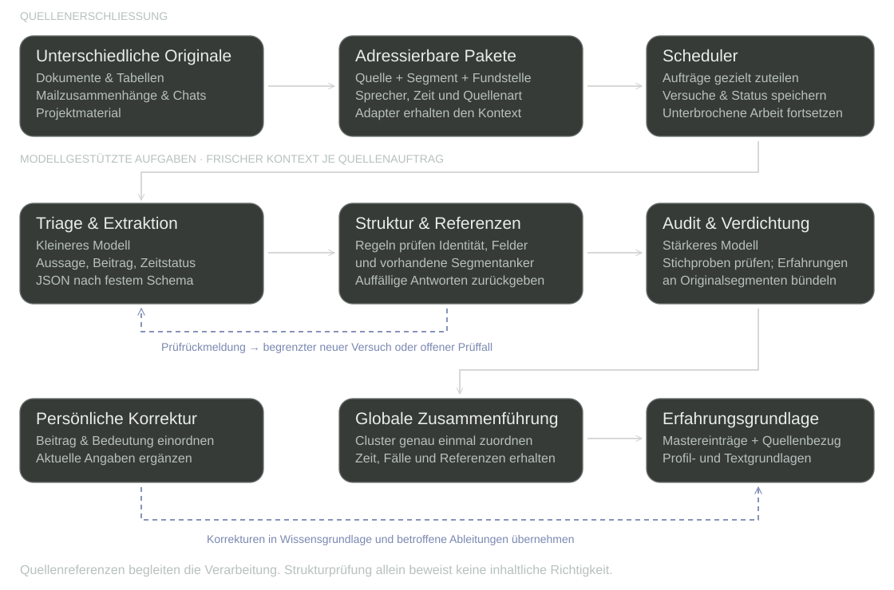

AI & Agentensysteme
Agentensystem für quellengebundenes Wissen
Spezialisierte Modellaufgaben erschließen Dokumente, Nachrichten und Projektmaterial als quellengebundene Erfahrungen. Extraktion, Prüfung und Verdichtung liefern eine korrigierbare Wissensgrundlage für Profil- und Textarbeit.
Erfahrungswissen wiederverwenden: Quellenbezug, Zeit und Beitrag bleiben bis zur Fundstelle nachvollziehbar.
Quellenpakete, Extraktion und Prüfung im Zusammenhang

Eine Aussage bleibt bis zur Fundstelle verfolgbar
Jedes Paket besitzt eine Quellen-ID und adressierbare Segmente. Je nach Quelle zeigen diese auf eine Dokumentseite, einen Tabellenbereich, eine Nachricht oder einen Projektabschnitt. Zeit und Sprecher bleiben am Kontext.
Bei E-Mails führen Antwortreferenzen die Zusammenfassung. Ein gleicher Betreff allein genügt nicht. Bei Chats wird der aktive Gesprächszweig aufbereitet; Nutzerangaben und Assistententext bleiben unterscheidbar.
Struktur und inhaltliche Zuordnung getrennt prüfen
Die Extraktion unterscheidet Tätigkeit, Entscheidung und Ergebnis sowie erledigte, laufende und geplante Arbeit. Prüfregeln kontrollieren Felder, Quellenidentität und tatsächlich vorhandene Segmentanker.
Ein stärkeres Modell prüft Stichproben und liest für die Verdichtung wieder die Originalsegmente. Mehrere Quellen können dieselbe Erfahrung stützen. Bei der globalen Zusammenführung erhält jeder verarbeitete Cluster genau eine primäre Zuordnung.
Fehlerart und Bearbeitungsstand steuern die Fortsetzung
| Befund | Reaktion des Systems |
|---|---|
| Quelle unlesbar oder Aufbereitung fehlgeschlagen | Als technischer Quellenfehler festhalten. Die Quelle gilt dadurch nicht als inhaltlich irrelevant. |
| Modellantwort ungültig oder Zuschreibung auffällig | Mit Prüfrückmeldung begrenzt wiederholen; danach zur weiteren Prüfung zurückstellen. Eine lesbare Quelle bleibt erhalten. |
| Lauf unterbrochen oder Auftrag hängen geblieben | Gespeicherte Zustände wiederaufnehmen und verwaiste Aufträge erneut einordnen. Die globale Verdichtung setzt an gespeicherten Einheiten fort. |
Die Tabelle lässt sich auf kleinen Bildschirmen seitlich verschieben.
Die globale Zusammenführung arbeitet sequenziell. Bereits verdichtete Einheiten und offene Arbeit bleiben dadurch über Unterbrechungen hinweg unterscheidbar.
Modell und Kontext nach Aufgabe wählen
Für jedes Quellenpaket beginnt die Extraktion mit einem frischen, begrenzten Kontext. Aufgabenregeln und Ausgabeschema führen die Verarbeitung; eine gewünschte spätere Stelle wird nicht in jede Quelleninterpretation eingebaut.
- Triage & Extraktion
- Ein kleineres Modell sichtet Einzelpakete und liefert strukturierte Aussagen oder Prüffälle.
- Verdichtung & Stichproben
- Ein stärkeres Modell führt Erfahrungen zusammen und prüft ausgewählte Extraktionen vertieft.
Eine fortschreibbare Grundlage für mehrere Anlässe
Der Erfahrungspool wird für Profil, Positionierung und Bewerbungsunterlagen genutzt. Mastereinträge, Quellenzuordnungen und Textbausteine liefern den Zusammenhang für eine anlassbezogene Auswahl.
Übertragbarkeit auf Unternehmen · mögliche Anwendung
Aus heterogenen Beständen eine fachliche Wissensgrundlage entwickeln
Die Architektur lässt sich auf Unternehmenswissen übertragen: Dokumente, E-Mails und Projektstände gezielt erschließen, Aussagen mit Fundstellen verbinden und zu überprüfbaren Zusammenhängen verdichten.
Wissen auffindbar und nutzbar machen
Quellengebundene Einträge können beispielsweise Entscheidungen, Projektverläufe oder wiederkehrende Fachfragen bündeln. Eine Fachperson prüft Bedeutung und Gültigkeit; die Referenzen erlauben den Rückweg zur ursprünglichen Aussage.
Kontext für Agenten und Automationen bereitstellen
Ausgewählte Wissenspakete können nachgelagerte Agenten mit Unternehmenskontext versorgen. Strukturierte Felder eignen sich als Eingaben für weitere Automationen, sobald fachliche Regeln und Freigaben dafür festgelegt sind.
Änderungen nachvollziehbar fortschreiben
Neue Angaben können bestehende Einträge ergänzen oder korrigieren. Quellenzuordnung und Zeitbezug helfen, betroffene Ableitungen gezielt zu aktualisieren. Im persönlichen System geschieht diese Fortschreibung fachlich geführt.
Vor einer betrieblichen Nutzung konkretisieren
Eine betriebliche Nutzung setzt passende Quellenauswahl, Berechtigungen, Aktualisierung und fachliche Zuständigkeit voraus. Die gezeigte Umsetzung dient persönlichem Erfahrungswissen; der Unternehmensbezug beschreibt eine mögliche Übertragung.
Zeigt unter anderem: Context Engineering · Structured Outputs · Validation · Workflow State